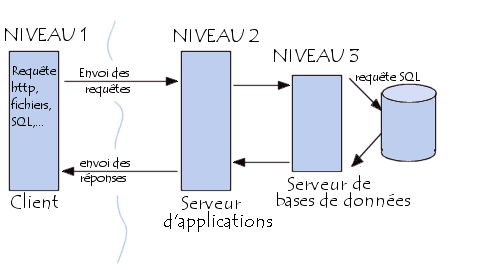
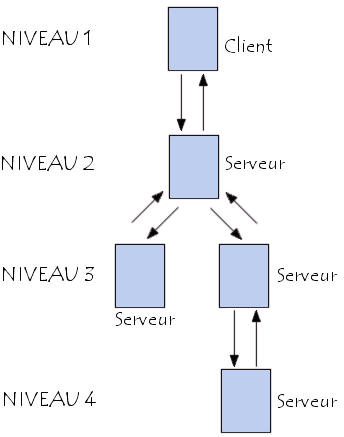

Présentation de l'architecture à 3 niveaux
Dans l'architecture à 3 niveaux (appelée architecture 3-tiers), il existe un niveau intermédiaire, c'est-à-dire que l'on a généralement une architecture partagée entre :
1. Un client, c'est-à-dire l'ordinateur demandeur de ressources, équipée d'une interface utilisateur (généralement un navigateur web) chargée de la présentation ;
2. Le serveur d'application (appelé également middleware), chargé de fournir la ressource mais faisant appel à un autre serveur
3. Le serveur de données, fournissant au serveur d'application les données dont il a besoin.
Le serveur de données, fournissant au serveur d'application les données dont il a besoin.
. Partage d'application entre client, serveur intermédiaire, et serveur d'entreprise ;
. Partage d'application entre client, serveur d'application, et serveur de base de données d'entreprise.

Comparaison des deux types d'architecture
L'architecture à deux niveaux est donc une architecture client/serveur dans laquelle le serveur est polyvalent, c'est-à-dire qu'il est capable de fournir directement l'ensemble des ressources demandées par le client.
Dans l'architecture à trois niveaux par contre, les applications au niveau serveur sont délocalisées, c'est-à-dire que chaque serveur est spécialisé dans une tâche (serveur web/serveur de base de données par exemple). L'architecture à trois niveaux permet :
1. Une plus grande flexibilité/souplesse ;
2. Une sécurité accrue car la sécurité peut être définie indépendamment pour chaque service, et à chaque niveau ;
3. De meilleures performances, étant donné le partage des tâches entre les différents serveurs.
L'architecture multiniveaux
Dans l'architecture à 3 niveaux, chaque serveur (niveaux 2 et 3) effectue une tâche (un service) spécialisée
Un serveur peut donc utiliser les services d'un ou plusieurs autres serveurs afin de fournir son propre service.
Par conséquent, l'architecture à trois niveaux est potentiellement une architecture à N niveaux...
